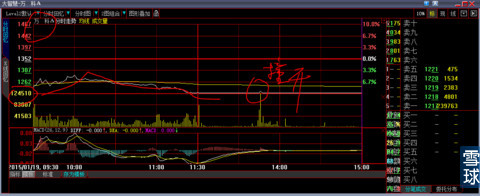

因为我对有哪些具体的大股票会去冲击这个大顶做了大量复盘。
信心满满。
我们的重仓股票zjls、rtgf必是开路先锋的轻骑兵。
历史的经验告诉我：每轮大盘上涨过程中，充当开路先锋的轻骑兵历来都是获益最早且获益最大。
另外：000002万科A在1月19日跌停那天，盘中被巨单撞开的一刹那，我就知道这一刻不远了，虽然我没有持有它。
XXX@炒的是心:心大说句个人观点，zjls、rtgf这两个票感觉下周要回调或者平盘十字星，五周k均线保持斜率不变乖离率过大，而且下午rtgf明显跟风zjls但是力度弱，看它跟风拉高立即出了一部分仓位。不知道心大怎么看。
炒的是心@XXX: 呵呵，
1、从你的说话，就知道，你是一个有扎实功底、时间经历的高手，我的疑问是：水平已经不是菜鸟了的你，怎么还这样到处打听？
2、你既然已经有了技术分析结论，就要严格执行。不能严格执行的人，可见你也是一个心神不定之徒。
3、我深谙人性，在这方面傲视你们全部男女，我即使捎带一滴滴谦虚就是侮辱你们智商：找别人做决定的人，必是是非人。别人给他的建议，结果对了，他会认为自己本来就知晓一切，不过是想旁证，纯属多此一举。别人的建议与结果不符，这种人就会把自己所有的过错推诿与人。生活中还少见吗？你想，我这种什么都明白的人，怎么可能愚蠢到你的境界，去给你做建议？
yjyanwen:@炒的是心:
炒的是心@yjyanwen: 去看看我之前的帖子。就知道有你这样心理的人是怎么死的。哪怕你就算是最大的牛人也一样。因为我知道了你这样人的心理活动、底线、底牌。
米斯特滚滚@炒的是心:那“中国建筑”呢？建筑那天也被撞开过。
炒的是心@米斯特滚滚: 你就是犯贱，放着那么大的牛股不集中精力全仓攻击，还在那里天天旁顾左右而言他。“601608中国建筑”我早在它4.18元主升浪要展开还没有展开的那一刻，要亲粉们上车的。现在它已经涨幅巨大半老徐娘，我们当然换更年轻、有更大成长空间的姑娘谈恋爱呀?对于账户资金而言，一只股票就足够了，关心其他那么多干嘛？甚至还关心大盘，大盘能给你账户增值吗？所以我写了《金瓶梅 .李瓶儿 人到底有多贱》？